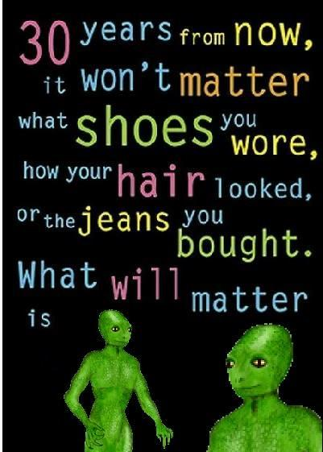
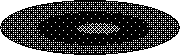

I created the icons for the ``Playing Cards," ``Picons," ``About," ``Github," ``Soundcloud," ``Mozilla Add-ons," ``Facebook," ``Twitter," and ``Youtube" buttons as displayed in the header of this page. I also created a bunch of the weather picons that should be visible to the right of this div.
Here are some websites & people that inspire me:
 http://info.cern.ch
http://info.cern.ch
https://www.eff.org
http://idlewords.com
http://wwwtxt.org
http://www.herpolhode.com/rob/
http://cat-v.org
http://9front.org
https://www.openbsd.org/
http://plan9.bell-labs.com/plan9/
http://suckless.org/
https://www.reactos.org/
https://www.winehq.org/
https://dataswamp.org/
http://www.mistys-internet.website
http://www.macpaint.org
http://fauux.neocities.org
http://flatassembler.net
http://csh.bz/stage
http://kinzler.com
http://www.kare.com
https://www.jwz.org
http://home.mcom.com
https://www.wikipedia.org
http://www.effectgames.com/demos/canvascycle
http://www.pouet.net
http://textfiles.com
http://reneefrench.com
https://libraryofbabel.info
http://atomicbios.tripod.com
http://www.kreativekorp.com
http://tiffanijonesbrown.com
http://stephaniekwak.com
https://ptsteadman.com
http://www.rossde.com
http://theandrogynborg.neocities.org
http://www-cs-faculty.stanford.edu/~uno/
http://bisqwit.iki.fi
http://kfarwell.org
http://lucacardelli.name
https://stallman.org
https://swtch.com/~rsc/
http://www.xteddy.org
http://lsub.org/who/nemo/
(potentially nsfw): https://divinityinthee.com
http://members.tripod.com/cpu_bios/
http://wwwwwwwww.jodi.org
http://www.heavensgate.com
http://www.westview.com
http://carles.buzz
http://www.xanadu.com
http://v2.nl/(archive)
https://justinjackson.ca/words.html
http://j-walk.com/other/ossw/
https://funroll-loops.org
http://adequacy.org
http://fivebodied.com/
http://www.channer.tv
http://www.wisebrod.com/doom/
http://ccru.net (note: I do not agree with Nick Land's current ideology)
http://www.bobbybeausoleil.com (note: I do not condone the actions of the Manson family)
http://lowtech.org
http://www.geocitiesforever.com
http://charlottesartre.com (probably nsfw)
http://www.johntitorfoundation.com
http://associativemusic.com/
http://www.timecube.com/
http://www.bbc.co.uk/blogs/adamcurtis
http://www.teleportacia.org/war/
http://whitescreen.jeunecreation.org
http://aem1k.com
http://numeral.com/appletsoftware/eicon.html
http://cachemonet.com/
http://comeonandsl.am/
http://tilde.club/
http://www.teleferique.org/
http://0100101110101101.org
http://heaven.internetarchaeology.org/heaven.html#bottom
http://heathersanimations.com/alien1.html
http://one-gif.com/positions/
http://www.reveries.fr/gifs/
http://retraite.chez.com/
http://www.lingscars.com/
http://havenworks.com/
http://yvettesbridalformal.com/
http://www.constellation7.org
http://www.galaxion.com/
http://www.zion-corp.net/
http://www.spaceark.net/
http://www.milliondollarhomepage.com/
http://www.worlds-worst-website.com/
http://www.arngren.net/
http://www.dpgraph.com/
http://www.ifindit.com/
http://www.webkinglasvegas.com/
http://toastytech.com/evil/
http://www.fogcam.org/
http://www.fishcam.com/
http://geocities.com/spunk1111/
http://www.geocities.ws/search/local/
http://www.ibiblio.org/gio/iconbrowser/
http://jankenpopp.com
http://zombect.ro
http://databit.me/
http://freesson.com/festilab/index.php
http://pespmc1.vub.ac.be/
https://meaningness.com/
http://wiki.c2.com/
http://naggum.no
http://www.unsafe.nu
http://www.metamute.com
http://www.orphandrift.com
http://switch.sjsu.edu
http://www.techgnosis.com
http://www.notbored.org
http://nenadseo.com/blog
http://harkonnen.pudelrock.com/unsafe/

(this space intentionally left blank)